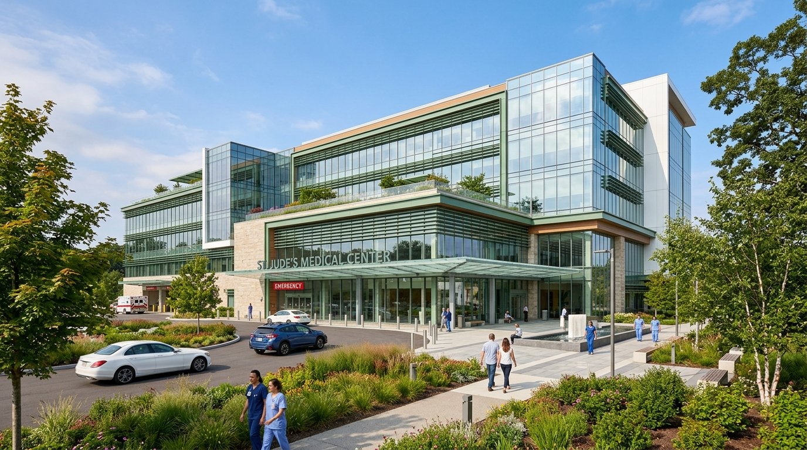

Tips Menjaga Kesehatan Jantung Setiap Hari
Lakukan olahraga ringan secara rutin, hindari lemak berlebih, dan kurangi stres untuk menjaga kesehatan otot jantung Anda...
Baca SelengkapnyaKami hadir dengan layanan medis berkualitas tinggi, tim dokter spesialis berpengalaman, dan fasilitas diagnostik modern untuk memberikan perawatan terbaik dan pemulihan kesehatan optimal.

Dokter Spesialis
Pasien Terlayani
Kamar Perawatan
Kepuasan Pasien
PT Graha Medika Nusantara mendedikasikan diri untuk menghadirkan sarana pengobatan yang aman, bermutu tinggi, dan bersahabat bagi Anda. Kami terus bersinergi membangun ekosistem kesehatan terpadu demi kenyamanan pelayanan medis pasien.
Layanan IGD, Farmasi & Laboratorium Non-stop.
Dokter spesialis dan perawat berpengalaman.
Teknologi diagnostik & tindakan bedah terkini.
Mengutamakan keselamatan & kesembuhan pasien.
Konsultasi rawat jalan dokter spesialis.
Kamar pemulihan VIP & Standard steril.
Pertolongan darurat gawat medis cepat.
Pencitraan CT-Scan, X-Ray & USG 4D.
Analisis klinis & patologi akurat.
Apotek RS penyedia obat legal 24 jam.
Tim dokter spesialis kami siap memberikan konsultasi & penanganan medis terbaik secara tepat dan informatif.
Lihat Semua DokterDidukung dengan teknologi medis modern yang steril untuk kenyamanan & keselamatan pasien.
Pemantauan intensif pasien kritis.
Kamar rawat inap VIP berfasilitas suite.
Bedah bedah steril peralatan canggih.
Tes patologi klinis modern lengkap.
Transportasi medis darurat armada cepat.
Lakukan olahraga ringan secara rutin, hindari lemak berlebih, dan kurangi stres untuk menjaga kesehatan otot jantung Anda...
Baca SelengkapnyaImunisasi rutin sangat krusial dalam membangun ketahanan tubuh anak terhadap ancaman infeksi penyakit berbahaya menular...
Baca SelengkapnyaKonsumsi serat buah dan sayuran segar secara seimbang untuk menyuplai nutrisi, meningkatkan daya tahan, serta metabolisme...
Baca SelengkapnyaKetahui langkah-langkah penanganan geriatri mandiri agar orang tua tetap aktif, bugar, dan bahagia menjalani masa tua...
Baca Selengkapnya